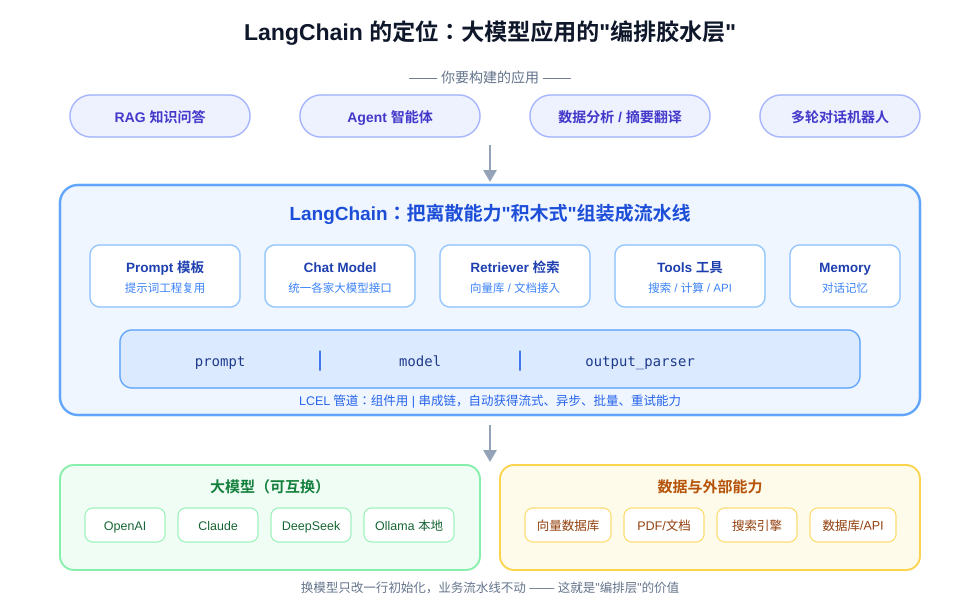
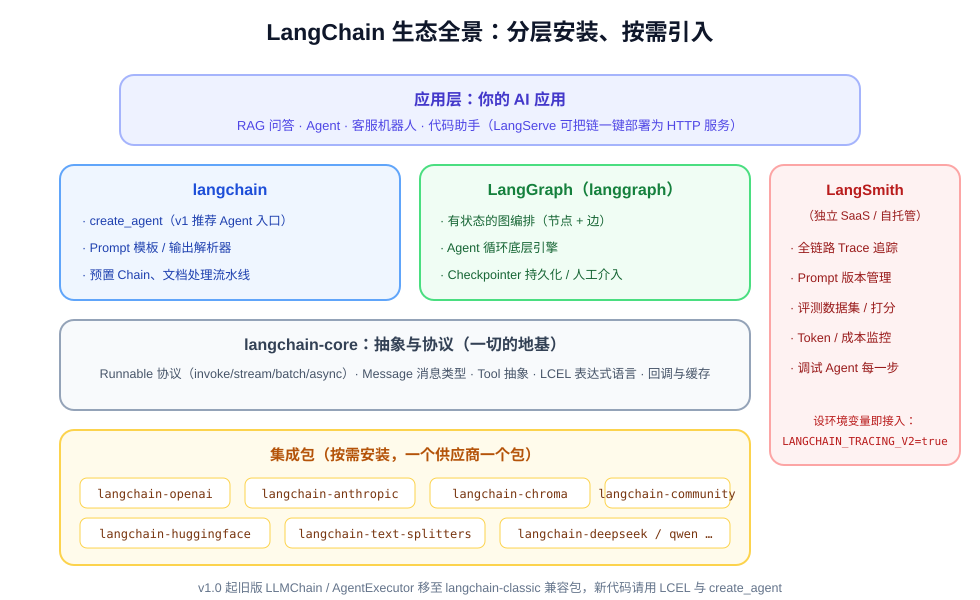
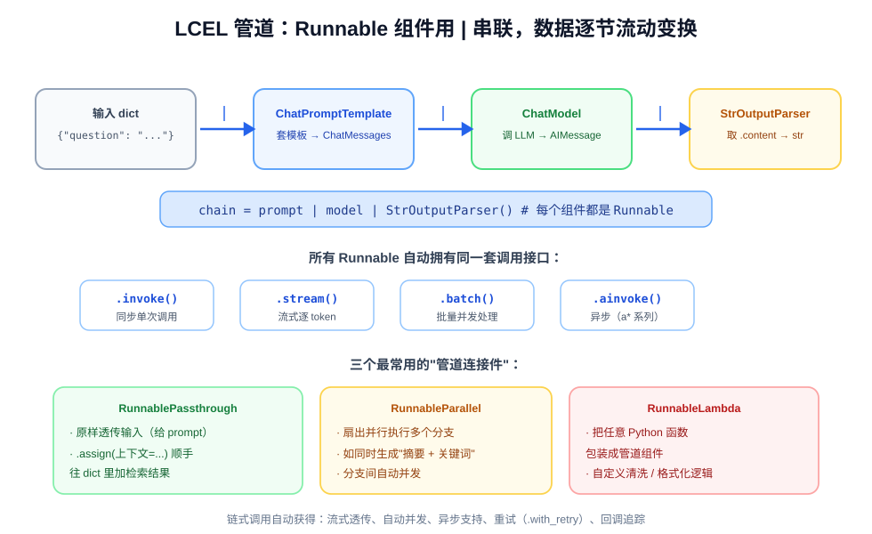
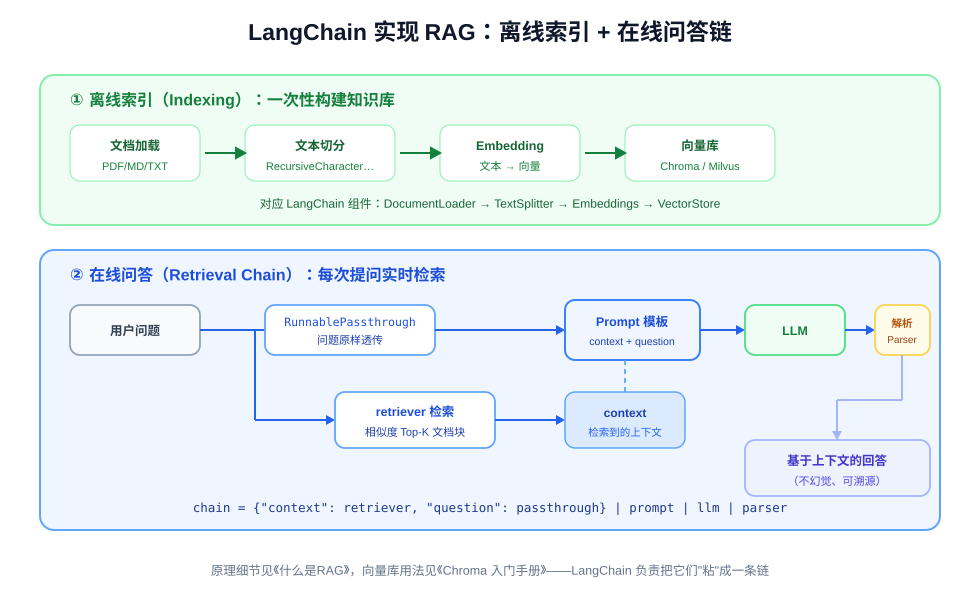
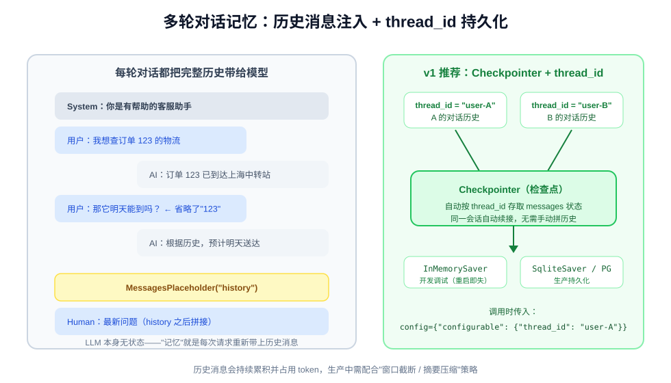
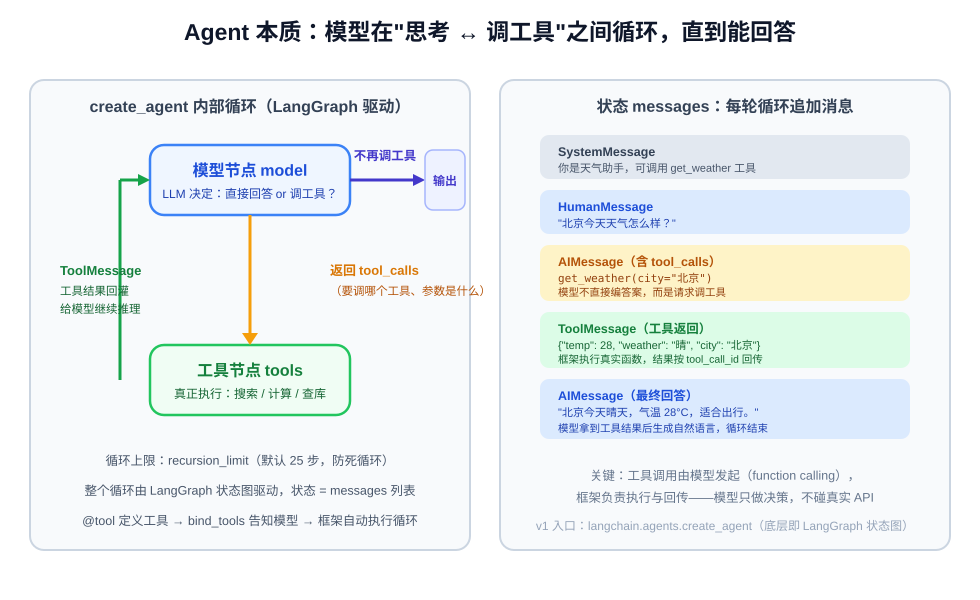

LangChain 入门手册：用搭积木的方式编排大模型应用
LangChain 是目前最主流的大模型应用开发框架，提供一套统一抽象，把提示词模板、大模型、文档检索、工具调用、对话记忆等能力封装成可组合的"积木"。 用一根管道符
|就能把它们串成完整流水线（LCEL），并自动获得流式输出、异步、批量、重试、链路追踪等工程能力；复杂场景再升级到 LangGraph 状态图和 Agent 自主循环。 本篇基于 LangChain v1.x（2025 年 10 月发布 1.0），从安装、核心抽象、LCEL、RAG、记忆到 Agent 与排错，带你从入门到实战。 （原理背景可参阅同目录《什么是RAG》《Chroma 入门手册》《如何搭建一个Agent》。）
一、LangChain 是什么
裸调大模型 API 时，开发者很快就会遇到一堆重复劳动：提示词怎么组织和复用、多轮对话历史怎么管理、RAG 检索结果怎么拼进上下文、工具调用的循环怎么写、输出怎么解析成结构化数据、流式/异步怎么统一处理、调用链怎么观测调试……
LangChain 的定位就是大模型应用的编排胶水层：它不提供模型，也不提供向量库，而是定义一套标准接口，让你像搭积木一样把"模型、数据、工具"组装成应用。

核心价值：
- 统一接口：OpenAI、Claude、DeepSeek、通义千问、本地 Ollama……换模型只改一行初始化，业务代码不动；
- 组件化：Prompt、Model、Parser、Retriever、Tool 都是标准组件，可自由组合；
- LCEL 管道：
prompt | model | parser一行成链，自动支持流式、异步、批量； - 工程化开箱即用：缓存、回调、重试、日志追踪（LangSmith）一应俱全；
- 进阶路径清晰：固定流程用 LCEL 链，需要自主决策用 Agent，复杂状态机用 LangGraph。
什么时候不该用 LangChain？ 如果只是"单次调一下模型拿个回答"，直接用官方 SDK 更简单。LangChain 的价值在多步骤、多组件、需要编排的场景（RAG、Agent、多轮对话）。别为了一个 API 请求引入整个框架。
二、生态全景与版本说明

LangChain 从 0.2 起拆分为多个包，按需安装即可：
| 包 | 职责 | 必装？ |
|---|---|---|
langchain-core |
地基：Runnable 协议、Message、Tool 抽象、LCEL | 自动依赖 |
langchain |
高层 API：create_agent、Prompt 模板、预置链 |
✅ |
langchain-openai / langchain-anthropic / langchain-deepseek … |
各模型供应商集成 | 按模型选装 |
langchain-chroma / langchain-huggingface |
向量库、Embedding 模型集成 | 按需 |
langchain-text-splitters |
文档切分（RAG 用） | 按需 |
langchain-community |
社区维护的大量第三方集成 | 按需 |
langgraph |
有状态图编排，Agent 的底层引擎（v1 随 agent 能力引入） | Agent 场景 |
| LangSmith | 独立 SaaS/自托管平台：链路追踪、Prompt 管理、评测 | 可选 |
⚠️ 版本说明（重要）
LangChain 演进很快，网上教程新旧混杂。v1.0 的关键变化：
AgentExecutor、initialize_agent、LLMChain、ConversationChain等旧 API 已移除，迁移到独立兼容包langchain-classic；新代码统一用 LCEL 链和create_agent；- 旧教程中的
langgraph.prebuilt.create_react_agent推荐改用langchain.agents.create_agent（底层仍是 LangGraph）； .predict()/.apply()等旧方法移除，统一为.invoke()/ .batch()；- Python 要求 3.10+；
- LCEL（
|管道）和ChatPromptTemplate、StrOutputParser等核心用法保持不变，是最值得先学的部分。
本文所有代码均按 v1.x 编写；第十二节有新旧 API 对照速查表。
三、安装与环境准备
3.1 安装
# 核心 + OpenAI 兼容模型（DeepSeek、通义、Kimi、本地 vLLM 等都走这套）
pip install langchain langchain-openai
# RAG 全家桶（第七节用）
pip install langchain-chroma langchain-text-splitters langchain-community
# Agent 的持久化记忆（第八节用，SqliteSaver）
pip install langgraph-checkpoint-sqlite
建议使用 Python 3.10~3.12 的虚拟环境（venv / conda）。安装后验证版本：
python -c "import langchain; print(langchain.__version__)"
3.2 配置密钥与接口地址（环境变量，勿硬编码）
# Windows PowerShell
$env:OPENAI_API_KEY = "sk-你的密钥"
$env:OPENAI_BASE_URL = "https://api.deepseek.com/v1" # 用 DeepSeek 等兼容服务时
# Linux / macOS
export OPENAI_API_KEY="sk-你的密钥"
export OPENAI_BASE_URL="https://api.deepseek.com/v1"
也可在项目根目录放 .env 文件（配合 python-dotenv 的 load_dotenv() 加载）。永远不要把真实密钥提交到 Git。
3.3 Windows 环境常见坑
ModuleNotFoundError/ 导入失败：先确认命令行提示符前有虚拟环境标识（如(.venv)），IDE（VS Code / PyCharm）也要选到同一个解释器——全局/虚拟环境装错位置是最常见原因；- pydantic 版本冲突：LangChain v1 依赖 Pydantic v2，若老项目锁了 v1 会报各种校验错误，升级或新建干净的 venv；
- 中文文件读取乱码：
TextLoader("a.md", encoding="utf-8")显式指定编码； - HuggingFace 本地 Embedding 模型首次使用会下载权重，国内可设置镜像：
$env:HF_ENDPOINT = "https://hf-mirror.com"。
四、5 分钟快速上手
第一个 LCEL 链：Prompt 模板 → 聊天模型 → 字符串解析器，用 | 串起来。
import os
from langchain_openai import ChatOpenAI
from langchain_core.prompts import ChatPromptTemplate
from langchain_core.output_parsers import StrOutputParser
# 1. 模型：api_key / base_url 统一从环境变量读取（DeepSeek、通义等兼容 OpenAI 协议）
model = ChatOpenAI(
model="deepseek-chat", # 或 "gpt-4o-mini"
temperature=0.3,
api_key=os.getenv("OPENAI_API_KEY"),
base_url=os.getenv("OPENAI_BASE_URL"), # 不用第三方时可省略
)
# 2. 提示词模板：{question} 是占位符，调用时填入
prompt = ChatPromptTemplate.from_messages([
("system", "你是一个简洁的技术助手，回答不超过三句话。"),
("human", "{question}"),
])
# 3. LCEL 管道：组件像 Unix 管道一样串联
chain = prompt | model | StrOutputParser()
# 4. 调用：invoke 传入 dict，输出直接是字符串
answer = chain.invoke({"question": "用一句话解释什么是 RAG？"})
print(answer)
# RAG（检索增强生成）是先从知识库中检索相关文档，再让大模型基于这些资料作答的技术。
数据在管道中的变换过程：
{"question": "..."} → ChatPromptTemplate → ChatModel → StrOutputParser
(dict) (List[Message]) (AIMessage) (str)
跨供应商切换模型还可以用工厂函数，模型名写成 "供应商:模型名"：
from langchain.chat_models import init_chat_model
model = init_chat_model("openai:gpt-4o-mini", temperature=0) # 需装 langchain-openai
# model = init_chat_model("anthropic:claude-sonnet-4-5") # 需装 langchain-anthropic
五、模型 I/O 三件套
5.1 Chat Models 与消息类型
聊天模型的输入/输出都是消息（Message），共四种角色：
| 消息类型 | 角色 | 典型内容 |
|---|---|---|
SystemMessage |
系统 | 人设、规则、约束 |
HumanMessage |
用户 | 人的提问 |
AIMessage |
助手 | 模型回复（可能携带 tool_calls） |
ToolMessage |
工具 | 工具执行结果（Agent 用） |
from langchain_core.messages import SystemMessage, HumanMessage
resp = model.invoke([
SystemMessage(content="你是翻译助手，只输出译文。"),
HumanMessage(content="把这句话翻译成英文：今天天气不错。"),
])
print(resp.content) # 回复文本
print(resp.usage_metadata) # {'input_tokens': ..., 'output_tokens': ..., 'total_tokens': ...}
常用参数：temperature（随机性，RAG/Agent 建议 0~0.3）、max_tokens、timeout、max_retries。
5.2 Prompt 模板
ChatPromptTemplate.from_messages 支持元组简写和消息对象混用，{变量} 即占位符：
from langchain_core.prompts import ChatPromptTemplate, MessagesPlaceholder
prompt = ChatPromptTemplate.from_messages([
("system", "你是{role}专家，用{style}风格回答。"),
MessagesPlaceholder(variable_name="history"), # 多轮对话历史插在这里（第八节）
("human", "{question}"),
])
msgs = prompt.format_messages(
role="Python", style="通俗",
history=[], question="列表和元组有什么区别？",
)
坑：模板里的花括号冲突。Prompt 模板用
{}标记变量，如果提示词里本身包含 JSON 示例（如{"name": "xxx"}），会被误解析。两种解法： 1. 花括号转义：{{"name": "xxx"}}； 2. 更推荐：把示例 JSON 作为普通字符串变量传进去（模板里只写{example}），避免双层花括号地狱。
5.3 输出解析：字符串、JSON 与结构化输出
StrOutputParser()：只取AIMessage.content，最常用；JsonOutputParser()：要求模型输出 JSON 并解析为 dict（需在 prompt 中嵌入格式说明）；with_structured_output()（推荐）：利用模型原生 function calling 保证结构，直接返回 Pydantic 对象：
from pydantic import BaseModel, Field
class Person(BaseModel):
"""从文本中抽取的人物信息"""
name: str = Field(description="姓名")
age: int = Field(description="年龄，未知填 0")
occupation: str = Field(default="", description="职业")
structured_model = model.with_structured_output(Person)
person = structured_model.invoke("李明今年 28 岁，是一名后端工程师。")
print(person) # Person(name='李明', age=28, occupation='后端工程师')
六、LCEL：表达式语言与 Runnable 协议

LCEL（LangChain Expression Language）是 LangChain 的灵魂。管道符 | 之所以能工作，是因为所有组件都实现了统一的 Runnable 协议——a | b 的含义就是"用 a 的输出作为 b 的输入"：
chain = prompt | model | parser
# 等价于：parser.invoke(model.invoke(prompt.invoke(input)))
6.1 一套接口，五种调用方式
任何 Runnable（包括整条链）都自动拥有：
chain.invoke({"question": "..."}) # 同步单次
chain.batch([{"question": "q1"}, {"question": "q2"}]) # 批量（内部并发）
for chunk in chain.stream({"question": "..."}): # 流式逐 token
print(chunk, end="", flush=True)
await chain.ainvoke({"question": "..."}) # 异步
async for chunk in chain.astream(...): ... # 异步流式
6.2 三个最常用的"管道连接件"
from langchain_core.runnables import (
RunnablePassthrough, RunnableParallel, RunnableLambda,
)
# ① RunnablePassthrough：原样透传输入（RAG 链里把问题原封不动带给 prompt）
# .assign() 还能在透传的同时往 dict 里塞新字段
passthrough = RunnablePassthrough.assign(extra=lambda x: "附加信息")
# ② RunnableParallel：扇出并行执行多个分支（自动并发）
parallel = RunnableParallel(
summary=prompt_summarize | model | StrOutputParser(),
keywords=prompt_keywords | model | StrOutputParser(),
)
print(parallel.invoke({"text": "长文章..."}))
# {'summary': '...', 'keywords': '...'}
# ③ RunnableLambda：把任意 Python 函数包装成管道组件
def format_docs(docs):
return "\n\n".join(d.page_content for d in docs)
clean = RunnableLambda(lambda s: s.strip())
6.3 管道还能挂工程能力
chain.with_retry(stop_after_attempt=3) # 失败自动重试
chain.with_config({"tags": ["rag"], "callbacks": [...]}) # 打标签、挂回调
chain.with_fallbacks([backup_model | parser]) # 主模型失败走备用模型
设计哲学：业务逻辑用组件组合表达，流式/异步/并发/重试这些横切能力由框架自动处理——这正是手写 SDK 调用最难补齐的部分。
七、RAG 实战：接向量库做知识问答
LangChain 是 RAG 模式的"发源地"和最成熟实现。原理（分块、Embedding、检索、Rerank）见同目录《什么是RAG》，向量库细节见《Chroma 入门手册》；这里专注用 LCEL 把检索和生成粘成链。

7.1 离线索引：文档 → 切块 → 向量库
# pip install langchain-chroma langchain-text-splitters langchain-community
from langchain_community.document_loaders import DirectoryLoader, TextLoader
from langchain_text_splitters import RecursiveCharacterTextSplitter
from langchain_openai import OpenAIEmbeddings
from langchain_chroma import Chroma
# 1. 加载文档（md/txt；PDF 用 PyPDFLoader，需 pip install pypdf）
loader = DirectoryLoader(
"./docs", glob="**/*.md",
loader_cls=TextLoader, loader_kwargs={"encoding": "utf-8"},
)
docs = loader.load()
# 2. 递归切分：优先按段落/句子边界切，块大小 500、重叠 50
splitter = RecursiveCharacterTextSplitter(chunk_size=500, chunk_overlap=50)
chunks = splitter.split_documents(docs)
# 3. Embedding + 存入 Chroma（国内中文场景可换 BGE 本地模型）
embedding = OpenAIEmbeddings(model="text-embedding-3-small")
vectorstore = Chroma.from_documents(
chunks, embedding, persist_directory="./chroma_db",
)
中文场景也可用本地 Embedding（免 API 费用）：
pip install langchain-huggingface， 然后from langchain_huggingface import HuggingFaceEmbeddings， 模型选 BGE 系列如BAAI/bge-small-zh-v1.5（设置HF_ENDPOINT=https://hf-mirror.com加速下载）。
7.2 在线问答链：检索 → 拼上下文 → 生成
from langchain_core.runnables import RunnablePassthrough, RunnableLambda
from langchain_core.prompts import ChatPromptTemplate
from langchain_core.output_parsers import StrOutputParser
retriever = vectorstore.as_retriever(search_kwargs={"k": 3})
prompt = ChatPromptTemplate.from_messages([
("system",
"你是知识库问答助手。只能根据下面提供的上下文回答；上下文没有就说不知道，不要编造。\n\n"
"上下文：\n{context}"),
("human", "{question}"),
])
def format_docs(docs):
return "\n\n".join(f"[来源{i+1}] {d.page_content}" for i, d in enumerate(docs))
# 输入是问题字符串：retriever 拿问题去检索，RunnablePassthrough 把问题原样透传
chain = (
{
"context": retriever | RunnableLambda(format_docs),
"question": RunnablePassthrough(),
}
| prompt
| model
| StrOutputParser()
)
print(chain.invoke("入职六年能休几天年假？"))
这条链就是 RAG 的最小完整形态：retriever 负责"开卷查资料"，prompt 负责"带着资料答题"。要加混合检索、Rerank、多路召回，只需把 retriever 换成自定义 Runnable（参考《什么是RAG》进阶章节）。
八、多轮对话与记忆
LLM 本身是无状态的：所谓"记忆"，本质是每次请求把历史消息重新带上。

8.1 入门做法：手动维护消息列表
from langchain_core.messages import HumanMessage, AIMessage
history = [
HumanMessage(content="我想查订单 123 的物流。"),
AIMessage(content="订单 123 已到达上海中转站。"),
]
# 第三轮：把历史 + 新问题一起发给模型
history.append(HumanMessage(content="那它明天能到吗？")) # 新问题里省略了"123"
resp = model.invoke(history)
print(resp.content) # 模型结合历史知道"它"指订单 123
在 LCEL 链中用 MessagesPlaceholder 注入历史：
from langchain_core.prompts import MessagesPlaceholder
chat_prompt = ChatPromptTemplate.from_messages([
("system", "你是客服助手。"),
MessagesPlaceholder(variable_name="history"),
("human", "{question}"),
])
chat_chain = chat_prompt | model | StrOutputParser()
chat_chain.invoke({"history": history, "question": "后天呢？"})
历史太长会撑爆上下文窗口，可用 langchain_core.messages.trim_messages 按 token 数窗口截断，或定期让模型摘要压缩历史。
8.2 生产做法：LangGraph Checkpointer + thread_id
v1 推荐的持久化方案：由 Checkpointer 按会话 ID 自动存取状态，不用手动拼历史：
from langchain.agents import create_agent
from langgraph.checkpoint.memory import InMemorySaver # 开发用；生产用 SqliteSaver
agent = create_agent(
model=model,
tools=[], # 纯对话也可以不带工具
system_prompt="你是客服助手。",
checkpointer=InMemorySaver(), # 生产：SqliteSaver.from_conn_string("memory.db")
)
config = {"configurable": {"thread_id": "user-123"}} # 每个用户一个 thread_id
agent.invoke({"messages": [{"role": "user", "content": "我叫小明，订单号是 123。"}]}, config=config)
# 换一次请求，只要 thread_id 相同，历史自动续上：
r = agent.invoke({"messages": [{"role": "user", "content": "我叫什么？我的订单号呢？"}]}, config=config)
print(r["messages"][-1].content) # 模型记得"小明"和"123"
旧教程里的
ConversationBufferMemory、RunnableWithMessageHistory等 Memory 类在 v1 中已归入langchain-classic。新项目直接用上面的 messages 历史 + Checkpointer 模式，概念更少、能力更强（天然支持断点续跑、人工介入）。
九、工具调用与 Agent
9.1 什么是 Tool Calling
现代大模型可以决定调用某个工具（函数），并输出结构化的调用参数；框架负责真正执行函数、把结果回灌给模型，模型再据此生成最终回答。Agent 就是把这个"思考 → 调工具 → 观察结果 → 再思考"的过程循环起来。

9.2 用 @tool 定义工具
from langchain_core.tools import tool
@tool
def get_weather(city: str) -> str:
"""查询指定城市的实时天气。当用户询问天气时调用。city 参数为中文城市名。"""
# 真实场景这里调用天气 API，演示直接返回
return f"{city} 今天晴，气温 28°C，西北风 2 级。"
print(get_weather.name) # get_weather
print(get_weather.description) # docstring 会被发给模型，决定"何时调用"
print(get_weather.invoke({"city": "北京"}))
要点：类型注解 + docstring 就是工具的全部说明书。模型靠 docstring 判断何时调用、靠参数名和注解生成调用参数，所以一定要写清楚。
9.3 v1 推荐：create_agent 三行成 Agent
from langchain.agents import create_agent
agent = create_agent(
model=model,
tools=[get_weather],
system_prompt="你是天气助手。涉及天气信息必须调用 get_weather 工具，不要凭记忆编造。",
)
result = agent.invoke(
{"messages": [{"role": "user", "content": "北京和上海今天天气怎么样？适合出门吗？"}]},
)
print(result["messages"][-1].content)
框架自动完成了：bind_tools（把工具 schema 发给模型）→ 解析模型返回的 tool_calls → 执行工具 → 回灌 ToolMessage → 循环直到模型给出不带工具调用的最终回答。输入输出统一是 {"messages": [...]}，最后一条 AIMessage 即答案。
结构化输出也可以直接挂在 Agent 上：
from pydantic import BaseModel
class Report(BaseModel):
summary: str
cities: list[str]
agent = create_agent(model=model, tools=[get_weather], response_format=Report)
r = agent.invoke({"messages": [{"role": "user", "content": "对比北京上海天气"}]})
print(r["structured_response"]) # Report(summary=..., cities=['北京', '上海'])
9.4 理解原理：手写一次工具循环
create_agent 是"自动驾驶"，理解底层循环有助于调试（Agent 概念详解见《如何搭建一个Agent》）：
from langchain_core.messages import HumanMessage, ToolMessage
llm_with_tools = model.bind_tools([get_weather])
messages = [HumanMessage(content="北京今天天气怎么样？")]
for _ in range(5): # 最多 5 轮，防死循环
ai_msg = llm_with_tools.invoke(messages)
messages.append(ai_msg)
if not ai_msg.tool_calls: # 模型不再要求调工具 → 结束
break
for tc in ai_msg.tool_calls: # 模型要求调工具
tool_result = get_weather.invoke(tc["args"]) # 真正执行
messages.append(ToolMessage(content=tool_result, tool_call_id=tc["id"]))
print(messages[-1].content)
v0.3 vs v1 对照：旧写法是
create_tool_calling_agent+AgentExecutor（v1 已移除，仅存在于langchain-classic）；新写法就是上面的create_agent，它本质是一个封装好的 LangGraph 状态图，循环上限对应图的recursion_limit（默认 25）。
十、流式、异步与批量
面向用户的产品中，流式输出（打字机效果）几乎是刚需：
# LCEL 链：逐 token 流式
for chunk in chain.stream("用三句话介绍 Python"):
print(chunk, end="", flush=True)
# Agent 流式：stream_mode="messages" 拿到模型逐 token 输出
for msg, metadata in agent.stream(
{"messages": [{"role": "user", "content": "北京天气？"}]},
stream_mode="messages",
):
if msg.content:
print(msg.content, end="", flush=True)
高并发服务端用异步（FastAPI 的 async def 里直接 await）：
async def ask(question: str):
return await chain.ainvoke({"question": question})
# 批量处理（如对 1000 条评论批量摘要），内部自动并发
results = chain.batch([{"question": q} for q in questions], config={"max_concurrency": 10})
Windows 注意：Python 3.8+ 的
asyncio.run()默认使用 Proactor 事件循环，一般无需特殊设置；若在 Jupyter 中跑异步代码，直接await chain.ainvoke(...)即可（Jupyter 自带事件循环）。
十一、缓存、回调与 LangSmith 可观测
11.1 LLM 缓存：重复问题不花第二次钱
from langchain_core.globals import set_llm_cache
from langchain_core.caches import InMemoryCache
set_llm_cache(InMemoryCache()) # 进程内缓存；重启失效，适合开发
# 生产可用 SQLiteCache（langchain_community.cache）或 Redis 缓存
chain.invoke({"question": "什么是闭包？"}) # 首次：真实调用
chain.invoke({"question": "什么是闭包？"}) # 再次：命中缓存，瞬间返回
11.2 LangSmith：全链路追踪与评测
LangChain 应用链一多，"模型到底走了哪几步、检索到了什么、工具调了几次、token 花在哪"就成了黑盒。设置两个环境变量即可接入 LangSmith（有免费额度）：
$env:LANGCHAIN_TRACING_V2 = "true"
$env:LANGCHAIN_API_KEY = "lsv2_你的密钥"
$env:LANGCHAIN_PROJECT = "my-rag-demo"
之后每次 invoke 的完整链路（每一步的输入/输出/耗时/token）都会出现在 LangSmith 面板，可回放、可对比、可做数据集评测。做 Agent 调试时这是最有用的工具。
代码内也可以挂回调做轻量观测。回调必须是 BaseCallbackHandler 的实例（不能直接传裸函数）：
from langchain_core.callbacks import BaseCallbackHandler, StdOutCallbackHandler
class PrintChainStart(BaseCallbackHandler):
def on_chain_start(self, serialized, inputs, **kwargs):
print("开始执行链，输入：", str(inputs)[:100])
# 自定义回调；StdOutCallbackHandler() 则会打印每一步的完整输入输出，调试最方便
chain.invoke({"question": "..."}, config={"callbacks": [PrintChainStart(), StdOutCallbackHandler()]})
十二、常见坑与排错速查
12.1 新旧 API 对照表（90% 的 ImportError 都在这）
| 报错 / 旧教程写法（0.x） | v1 正确姿势 |
|---|---|
from langchain.agents import AgentExecutor |
已移除 → from langchain.agents import create_agent |
initialize_agent(...) |
已移除 → create_agent(model=, tools=, system_prompt=) |
langgraph.prebuilt.create_react_agent |
改用 langchain.agents.create_agent |
LLMChain(llm=, prompt=) |
LCEL：prompt \| model \| StrOutputParser() |
ConversationChain / ConversationBufferMemory |
messages 历史 + Checkpointer（第八节） |
from langchain import hub |
独立包 langchain-hub（新代码可不用） |
llm.predict(...) / llm.apply(...) |
llm.invoke(...) / llm.batch(...) |
| 老代码实在跑不通 | pip install langchain-classic 临时过渡，但新功能不再更新 |
排查原则：遇到 ImportError 先 pip show langchain 看大版本，再对照上表；不要用正则自己解析模型文本来模拟工具调用，bind_tools / create_agent 才是官方路径。
12.2 其他高频坑
- PromptTemplate 解析报错（
KeyError/ 模板异常）：模板里的 JSON 花括号{}与变量语法冲突 → 转义为{{}}或把示例作为变量传入（见 5.2）； - 401 / 连接失败：检查
OPENAI_API_KEY、OPENAI_BASE_URL是否在运行代码的同一个环境中生效；用第三方兼容服务时 base_url 要带/v1； - 工具从不被调用：① 模型要支持 function calling（部分小模型/本地模型不支持）；② 工具的 docstring 写清"什么时候用"；③
temperature调低；④ 确认工具已传进tools=[...]； - Agent 死循环 / 超步数：调大
recursion_limit（config={"recursion_limit": 50}），并检查工具是否总返回报错信息导致模型反复重试； - RAG 答非所问：先单独测
retriever.invoke("问题")看检索到的块对不对——八成是切分策略或 Embedding 模型问题，不在生成端； - 中文乱码：文档加载显式
encoding="utf-8"；Windows 终端可设$env:PYTHONUTF8 = "1"； - 依赖装了还报 ModuleNotFoundError：确认 IDE / 终端用的是同一个虚拟环境解释器（见 3.3）。
十三、选型建议与学习路线
按复杂度选择武器，不要过度工程：
| 场景 | 推荐方案 |
|---|---|
| 单次问答、翻译、摘要 | 直接用模型官方 SDK，不必上 LangChain |
| 固定流程：RAG 问答、多步流水线 | LCEL 链（prompt \| model \| parser） |
| 需要模型自主决策、调工具循环 | create_agent（第九节） |
| 多 Agent 协作、人工审批、复杂状态/分支 | LangGraph 手写状态图（见《如何搭建一个Agent》） |
| 生产级可观测、评测 | LangSmith 全程追踪 |
推荐学习顺序：
- 跑通第四节的最小链，理解 Message / Prompt / Parser 三件套；
- 吃透第六节 LCEL 与 Runnable（
invoke/stream/batch、三个连接件）； - 按第七节做一个本地知识库 RAG（联动《Chroma 入门手册》《什么是RAG》）；
- 第九节用
@tool+create_agent做一个能查天气/搜索的 Agent； - 需要多轮持久化时再上 Checkpointer / LangGraph；
- 上线前接 LangSmith 做追踪与评测。
附：最小知识自检清单
- ☐ 能说清
prompt | model | StrOutputParser()每一步的输入输出类型 - ☐ 能独立用
ChatPromptTemplate写带变量和MessagesPlaceholder的模板 - ☐ 知道
with_structured_output怎么把输出约束成 Pydantic 对象 - ☐ 能用
RunnablePassthrough / RunnableParallel / RunnableLambda组装 RAG 链 - ☐ 能解释 RAG 链里
retriever和RunnablePassthrough()各自承担什么 - ☐ 能用
@tool定义工具并说出 docstring 的作用 - ☐ 能说清 Agent 循环中
AIMessage.tool_calls和ToolMessage的关系 - ☐ 知道 v1 为什么用
create_agent取代AgentExecutor，记忆为什么用 Checkpointer - ☐ 遇到 ImportError 会先查版本并对照第十二节速查表